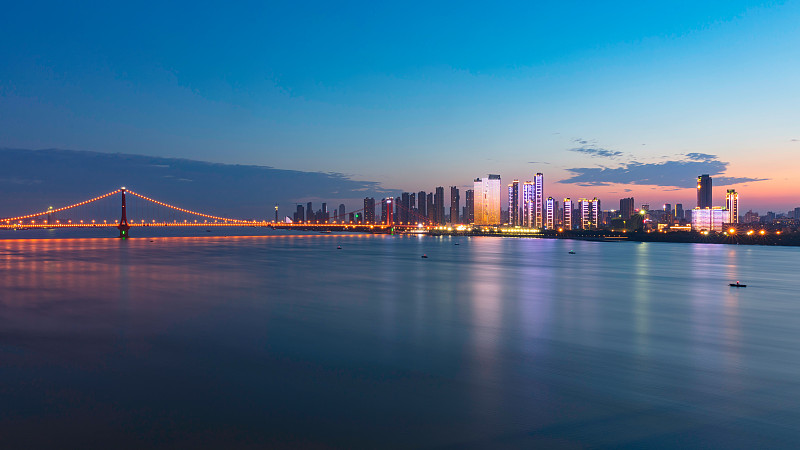
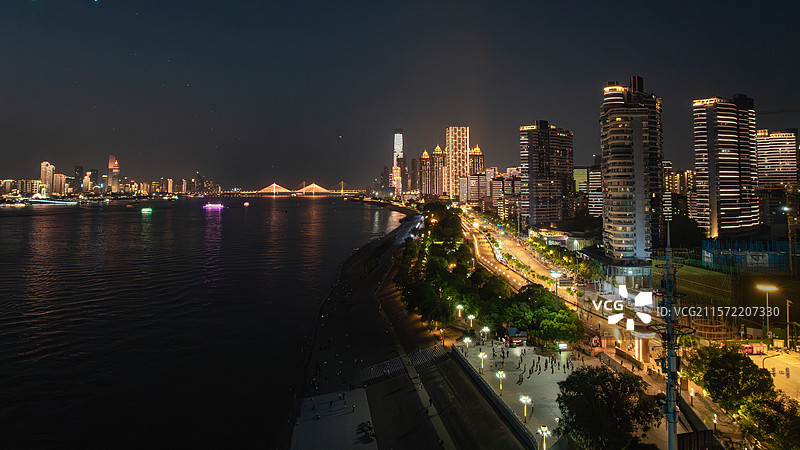
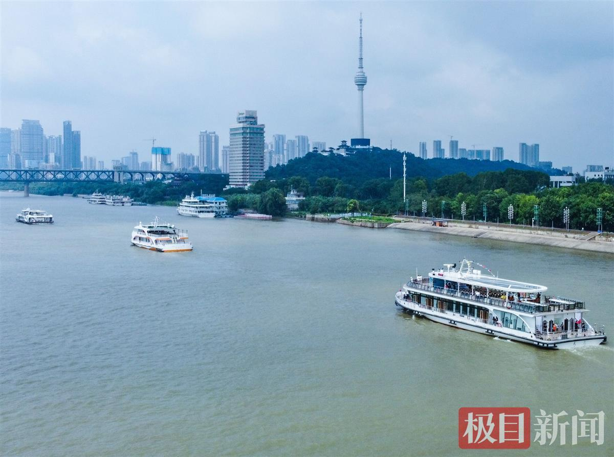
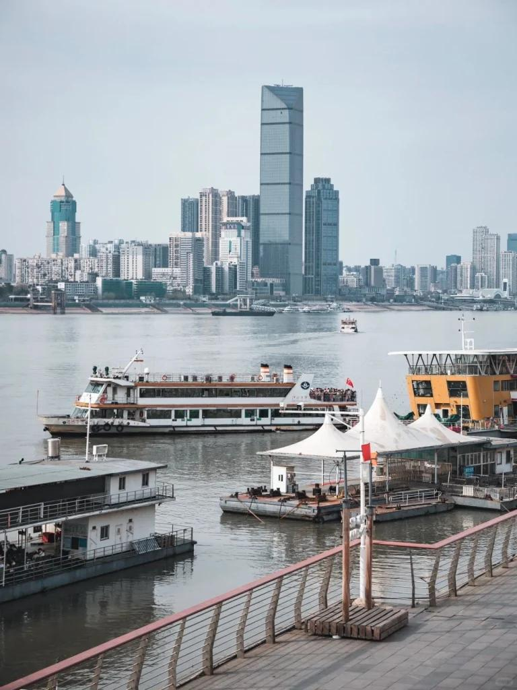

S·01

长江 · 黄昏江面黄昏过渡
天还没全黑，江面留着傍晚的橙光，大桥轮廓清晰，是夜色登场前最安静的一段。
武汉因江而生，长江穿城而过。天色暗下来后，两岸楼宇的灯光依次亮起， 在江面铺成一条暖色光带；江风从水面吹来，是这座城市夜里最放松的一段信号。

长江 · 黄昏江面天还没全黑，江面留着傍晚的橙光，大桥轮廓清晰，是夜色登场前最安静的一段。

江滩 · 步道夜景沿河岸步道边走边看，一侧是流动的车灯，一侧是江面倒影，散步节奏很慢。

长江 · 日间游船白天游船在开阔江面缓缓前行，对岸楼宇与电视塔依次掠过，江风把视线拉得很远。

江滩 · 码头岸线码头平台沿水铺开，游船依次停靠，对岸高楼立在水线之后，是江滩最开阔的一处视角。
白天的武汉节奏很快，到了江滩，脚步自然会慢下来。江风、水声和远处的灯火混在一起， 适合一个人走走，也适合和朋友并肩坐着聊天。
看夜景不必挤在人多的观景台，沿江步道任意一段都能找到视野开阔的位置； 夏天傍晚尤其舒服，水面会带走一部分热气。